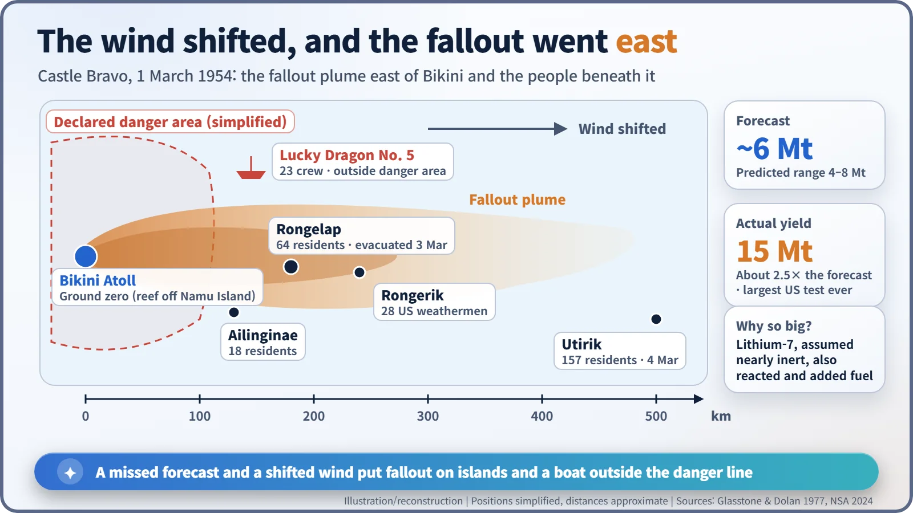
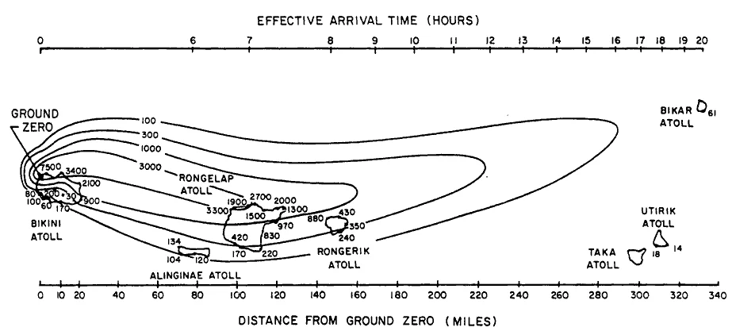
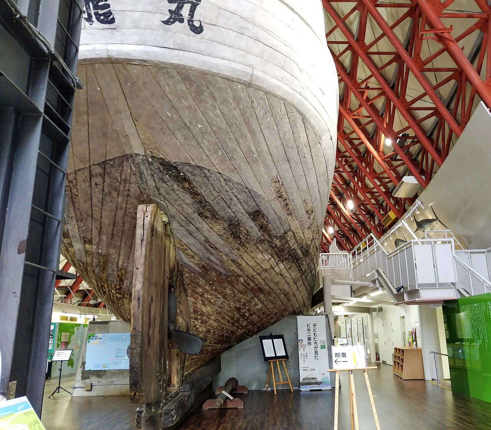
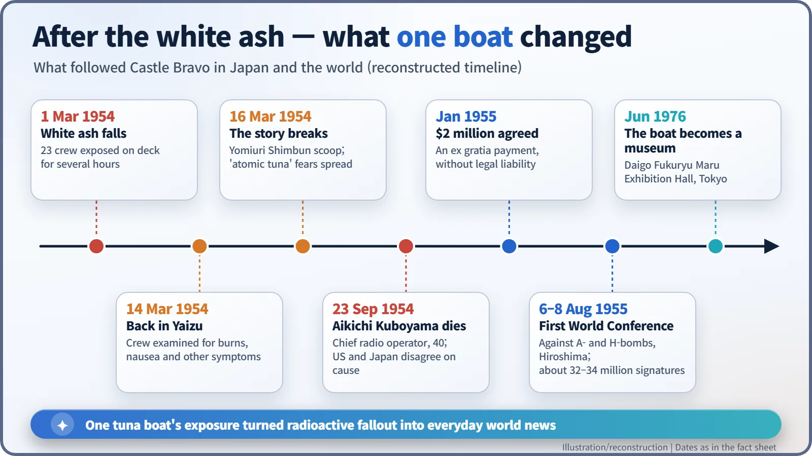

Nuclear History · 144
Snow on the Equator — Castle Bravo and the Lucky Dragon No. 5 (1954), the Test That Ran 2.5 Times Hot
One uncounted reaction and one unexpected wind put fallout on islands and a boat outside the danger line, and made fallout world news.
On 1 March 1954 the US hydrogen bomb test Castle Bravo yielded 15 megatons, about 2.5 times the forecast, because lithium-7 in the fuel took part in the reaction after all. An unforecast east wind carried fallout onto inhabited Marshall Islands atolls and onto the 23 crew of the Japanese tuna boat Lucky Dragon No. 5, outside the declared danger area. The incident made "fallout" a household word and fed the movement toward the 1963 Partial Test Ban Treaty.
Snow on the equator
On the morning of 1 March 1954, white powder began falling on the deck of a Japanese fishing boat in the middle of the Pacific. Snow, this close to the equator? For several hours the 23 crew kept hauling in their long lines while the flakes settled on their hair and skin. The boat was the Daigo Fukuryu Maru, the Lucky Dragon No. 5. Nobody on board knew what the powder was.
The day they tested a bomb you could carry
A few hours earlier, at 6:45 a.m. local time and roughly 130–160 km to the west, the United States had fired its hydrogen bomb test Castle Bravo on a reef off Namu Island in Bikini Atoll. It was the first shot of Operation Castle. The first thermonuclear device, tested two years earlier, had been an experimental installation the size of a building, with refrigeration plant attached. This time the fuel was a solid, lithium deuteride, and the question was whether a hydrogen bomb could be made into a weapon that could actually be delivered. [1]
The designers expected about 6 megatons (6 million tons of TNT), within a predicted range of 4 to 8. The yield was 15 megatons, about 2.5 times the forecast. It remains the largest nuclear test the United States has ever conducted. [1]
The reaction nobody counted
Why was the forecast so far off? Lithium comes in two isotopes, atoms of the same element with different weights. The fuel had been enriched to about 40% lithium-6; the remaining 60% or so was lithium-7. The designers assumed lithium-7 would contribute almost nothing. As the physicist Carson Mark later put it, lithium-7 "had been assumed to be a much less good fuel than lithium-6." In fact, struck by fast neutrons, lithium-7 also produced tritium, a fusion fuel. It was like lighting a bonfire expecting half the wood to burn, and watching the whole pile go up. [1]
The wind went east, and the line did not hold
The yield was not the only problem. Contrary to the forecast, the upper-level winds blew east, toward inhabited atolls. Coral debris sucked up by the blast picked up radioactive fission products and fell back to earth downwind. That is fallout.
On Rongelap, about 180 km away, the fallout came down like snow. It fell on 64 Rongelap residents, 18 more who were staying on nearby Ailinginae, 157 people on more distant Utirik (sources give 154–167), and 28 US military weathermen on Rongerik. They were evacuated only between 2 and 4 March. Estimates of the dose received on Rongelap vary between studies, from about 1.3 to 1.9 gray (Gy, a unit of absorbed radiation energy). By 1963, thyroid tumours had been found in 20 of the 29 children who had been on Rongelap at the time. [1] [2]


The Lucky Dragon was outside the danger area the United States had declared. Sources disagree on how far outside, from about 22 km to 64 km beyond the boundary, but they agree that it was beyond the line. [1] [4]
From Yaizu to the world
The boat returned to its home port of Yaizu, in Shizuoka Prefecture, on 14 March. The crew were suffering from burns, nausea and hair loss. When the Yomiuri Shimbun broke the story on 16 March, Japan was in uproar. Inspectors ran Geiger counters over tuna at the markets, and between March and December 1954 about 486 tonnes of seafood brought in by 856 boats were thrown away. [4]
On 23 September the boat's chief radio operator, Aikichi Kuboyama (1914–1954), died at the age of 40. The cause of death is disputed. Japanese doctors attributed it to complications of radiation injury. The US side, which had an officer observe the autopsy, reported to Washington that it was serum hepatitis caused by blood transfusions given during treatment. He is widely said to have asked that he be the last victim of atomic and hydrogen bombs, though the exact wording differs between accounts. [3] [4]

On 31 March, Lewis Strauss, chairman of the US Atomic Energy Commission, claimed that the boat had been inside the danger area. In January 1955 the United States agreed to pay the Japanese government $2 million as an ex gratia payment, without accepting legal liability. [1]
More than 30 million signatures, and after
After the incident, a petition to ban atomic and hydrogen bombs spread through Japan like wildfire, collecting about 32 to 34 million signatures. From 6 to 8 August 1955, the first World Conference against Atomic and Hydrogen Bombs met in Hiroshima. [5]

The bigger change was that "fallout" became a word in the world's everyday news. Once people understood that neither borders nor danger lines mean anything to the wind, a joint declaration by scientists the following year and talks on banning atmospheric tests gained momentum, leading to the Partial Test Ban Treaty of 1963. [1]
The boat itself was decommissioned in 1967 and abandoned at the Yumenoshima landfill in Tokyo. After a citizens' campaign to save it, it went on display in June 1976 in an exhibition hall built on that same site. Its wooden hull still bears witness to what one uncounted reaction and one unexpected wind left behind. [4]